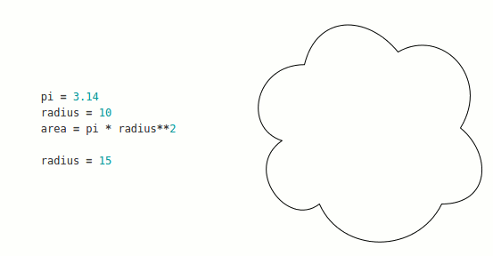

| Тема 9. Управление памятью и сборщик мусора. | ||
| Назад | ||
|
Создание объекта любого типа подразумевает выделение памяти для размещения данных об этом объекте. Когда объект больше не нужен - его необходимо удалить, очистив занимаемую память. Python - язык с встроенным менеджером управления памятью и выполняет данные операции автоматически за счет наличия сборщика мусора (англ. Garbage Collection, GC). Сборка мусора - технология, позволяющая, с одной стороны, упростить программирование, избавив программиста от необходимости вручную удалять объекты, созданные в динамической памяти, с другой - устранить ошибки, вызванные неправильным ручным управлением памятью. Алгоритм, используемый сборщиком мусора называется подсчетом ссылок (англ. Reference Counting). Python хранит журнал ссылок на каждый объект и автоматически уничтожает объект, как только на него больше нет ссылок (Рисунок 1.).  Рисунок 1. - Примерная схема работы сборщика мусора Время между созданием и уничтожением объекта - его жизненный цикл. Объекты, которые имеют на протяжении своего жизненного цикла одно неменяющееся и характеризующее их значение, а также умеют сравниваться, называются хешируемыми. К хешируемым объектам относятся все немутирующие типы данных, а также пользовательские объекты. |
||
| Конспект подготовлен Бакулиным А. М. 2022 год. | ||